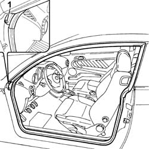
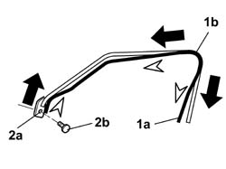

7005A34 FRONT SIDE DOOR COMPARTMENT SEAL R R
- Path
- Procedures > 70 FITTINGS > 7005 PASSENGER COMPARTMENT FRONT SIDE DOORS > 7005A LOCATION OF FRONT DOOR WIND NOISES > 7005A34 FRONT SIDE DOOR COMPARTMENT SEAL R R
- Kind
- repair procedure (removal / refitting; the operation number is the code)
- Applies to
- all engines; all production periods
- Interactive page
- https://sloeber94.github.io/elrnDB-aGt/en/#/125001762
Applies to: all engines; all production periods
 Removing
Removing
 Refitting
Refitting1. Remove the retaining plug using the knife.
 | Name | Country |
|---|---|---|
1 | Scraper blade | 1.823.015.000 |
2. Prise up the seal from its seat.

Applies to: all engines; all production periods
Refitting
RemovingCheck that the seal is intact and not damaged.
1. Fit the seal (1a) in its housing starting from the rear top corner (1b) for a length of about 300 mm.
2. Then position the seal at the top starting from the opening (2a) in the front pillar; then fit the seal retaining button (2b).
Continue fitting the seal until the top section is complete.
Then, finish fitting the seal on the centre pillar until a length of about 100 mm is reached on the element.
Complete fitting the front section until a length of about 100 mm is reached on the element.
Lastly, finish fitting the seal on the element taking care to position it in such a way that it is smooth and even.
